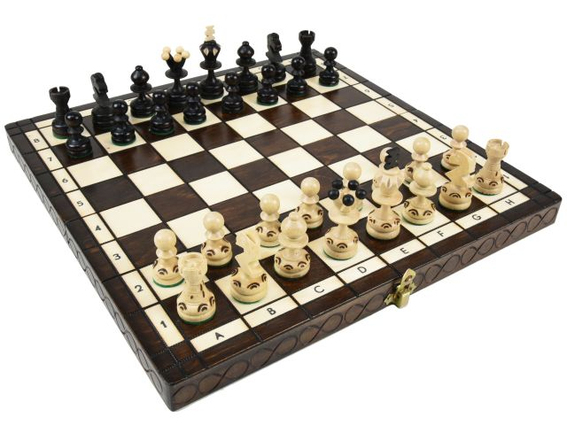
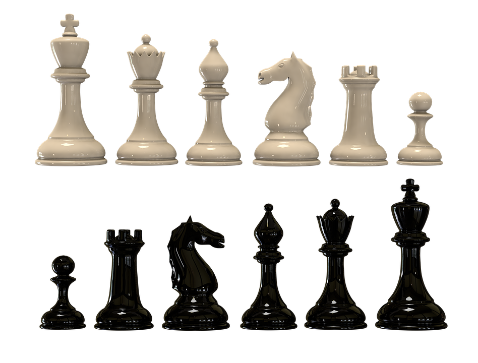

체스는 서양의 보드 게임이다.
기본적으로 흑과 백의 진영이 있으며, 상대방의 '킹' 기물을 체크메이트 시키면 이기는 게임이다.

바둑은 흑이 먼저 두지만 체스는 백이 먼저 둔다. 먼저 두는 백이 흑보다 조금 유리하다. 먼저 두는 백은 주도권을 가질 수 있고, 조금 불리하지만 흑으로 이기면 높은 평가를 받는다. 아직 완전히 풀린 게임은 아니며 흑과 백이 둘 다 실수 없이 완벽하게 둔다면 비길 것이라고 조심스럽게 추정만 할 뿐이다.
1. 킹, 상대에게 체크메이트를 당하지 않도록 보호해야 하는 말이다. 체스는 상대의 킹을 잡을 수밖에 없는 상황에 당도하면 승리한다. 장기와는 다르게 궁성 구분이 없어서 어디로든 갈 수 있다. 다만, 킹끼리만은 붙일 수가 없어 체크가 불가능하다. 킹이 혼자서 상대 킹을 체크시키러 들어가는 순간 자신도 체크에 걸리기 때문이다.
2. 퀸, 좌우, 상하, 대각선. 모든 방향으로 이동 가능하다. 즉, 룩과 비숍의 능력을 모두 가지고 있는 말이다. 전투력은 모든 말 중 최강. 대신 다른 말과는 달리 킹과 함께 딱 하나만 가지고 시작한다. 체스에서 퀸을 잃는 것은 장기에서 차를 잃는 것보다도 더 치명적이다. 퀸으로 폰 몇개를 성공적으로 치우고 후퇴했다면 후반 폰 경쟁에 상당히 유리해진다. 따라서 퀸을 안전하게 쓰는 게 중요하다.
3. 룩, 전후좌우 직선으로 움직인다. 말 하나가 퀸 다음으로 강력한 말인데, 하나뿐인 퀸과 달리 둘이서 시작하는 데다가 제한적인 비숍과 달리 가로 세로라는 쉽고 간단하면서도 위협적인 특성은 룩을 체스에서 가장 편리한 말로 만들어 준다. 기동성이 뛰어나 운용하기도 쉽고, 모든 칸을 다 다닐 수 있으며, 무엇보다 장거리 기물이라는 특성 상 라인 하나를 혼자서 커버할 수 있기 때문이다.
4. 비숍, 대각선으로 움직인다. 특유의 대각선 움직임은 활용이 힘들지만 동시에 허를 찌르거나 수비적으로 나갈 수 있기에 비숍을 잘 쓰는 사람은 그만큼 실력있다는 반증이다. 비숍은 대각선으로 움직이므로 길고 유효한 대각선을 잡는 것이 중요하다. 체스판의 딱 절반만큼만 이동할 수 있기 때문에 룩보다는 가치가 낮게 평가되지만 그렇다고 비숍이 가치가 낮은 말은 아니다. 기물이 어느 정도 사라진 중반부터 본격적인 기동력이, 기물이 많이 교환되어 별로 없는 엔딩에서는 룩에 버금가는 강력한 영향력을 발휘한다.
5. 나이트, 사방중 한 방향으로 한 칸, 그리고 그 방향의 양 대각선 방향 중 한 방향으로 움직이는 묘한 이동패턴을 가지고 있다. 그래서 대각선으로 움직이는 특성상 처음 놓인 칸과 같은 색의 칸으로만 이동할 수 있는 비숍과는 정반대로 한 번 이동할 때마다 필연적으로 칸 색이 달라지는 유일한 말이다. 또 유일하게 말을 뛰어넘을 수 있다. 일직선으로만 이동하는 다른 말과는 다른 이동 방식과 다른 말을 뛰어넘을 수 있다는 점 덕분에 폰으로 진형을 짜고 나면 자칫 경직될 수도 있는 체스 판을 헤집어 놓을 수 있는 유용한 변수다.
6. 폰, 행마법은 졸과는 달리 전진만 가능하며 첫회 한정으로 2칸 이동이 가능하다. 그 다음부터는 1칸씩. 단, 첫 이동을 할 때 바로 앞에 다른 말이 있으면 뛰어 넘을 수 없다. 공격은 앞 대각선으로만 공격할 수 있다. 공격행마와 이동행마가 다른 유일한 말이다. 폰은 체스판의 반대편 끝에 도달하는 동시에 폰과 킹을 제외한 기물 중에 하나로 승급할 수 있다.